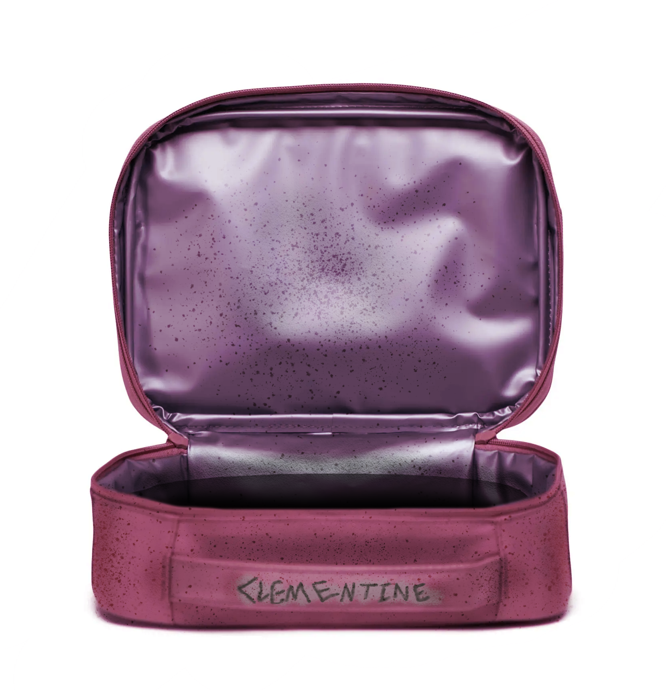

APP-002 is to be contained in LR-19, inside the locker labeled with its Entity #. All instances of APP-002-X are to be contained in radiation resistant containers in Site Radon.
Level-α Personnel shall not acces this Entity without the approval and backing of at least 2 Level-β Personnel and a written proposal approved by a Level-γ Personnel.
Retrieval of any APP-002-X instance should only be done after following XENON Safety Protocols for Handling Anomalous Radiation.
Any APP-002-X instances have to be scanned by on-site radiologists, and cleared by Protocol Upholders in charge of LR-19 before use for any purpose whatsoever.
Use of APP-002 for recreational purposes is strictly banned.
Retrieval:
APP-002 was retrieved from █████████████████ High School in ███████, Florida, USA after an unusual spike in radiation sickness victims was reported by students and faculty.
Entity Description:

APP-002
The entity is a lunchbag belonging to the late Clementine █████████, as noted by the worn-out handle, produced by MCD Co. in 19██.
It was bright pink in colour, but has become worn out due to the passage of time.
Once opened, the container inside is pitch black and smells faintly of sulfur. It is infinitely deep and anything dropped in it cannot be retrieved, unless a person directly thinks of the dropped item during retreival.
Once a person looks away as they reach their arm into APP-002, they will find and be able to pull out of APP-002 whatever object they last thought of before doing so (See Addendum). This is limited by its opening, 25cm by 25cm in length and width.
The retrieved object, designated APP-002-X, will exhibit varying degrees of ionizing radiation, the lowest documented being 37 kBq, and the highest being ███ EBq.
Following initial investigations, it has been declared Amin for use in obtaining samples and materials utilised in experiments of a radioactive nature, and poses little active harm to the outside world.
Addendum: Investigation-Log-002
As of ██-██-2███, a total of ███ instances of APP-002-X have been gained from APP-002.
Instances of APP-002-X are named after the express verbal intent of the Personnel reaching inside of APP-002.
Instances of APP-002-X with less than 50 kBq, or are indistinguishable from normal objects, are removed from the report for brevity.
APP-002-014: A 40kg dumbbell.
Object obtained successfully with no complications.
Level-β Personnel that retrieved the item exclaimed at the lightness of APP-002-014 during the process, before falling over from the sudden weight and breaking his arm once the object was removed from APP-002.
No way of determining the manufacturer was found.
75 kBq detected.
APP-002-098: A phone.
Object obtained successfully with no complications.
APP-002-098 has been identified as a Nokia 3310 from the year 2003, belonging to Clementine. Use of any calling, messaging, or networking functionality crashes APP-002-098.
223 kBq detected.
APP-002-███: A nuclear bomb.
Level-Ω Clearance granted.
Object obtained with extreme difficulty, requiring 5 Personnel to assist.
APP-002-███ seemed to be a miniature handheld version of the Tsar Bomba. Attached to it was an eight-segment timer counting from ten.
APP-002-███ soon exploded, killing all 5 researchers and rendering the Experiment Site unusable.